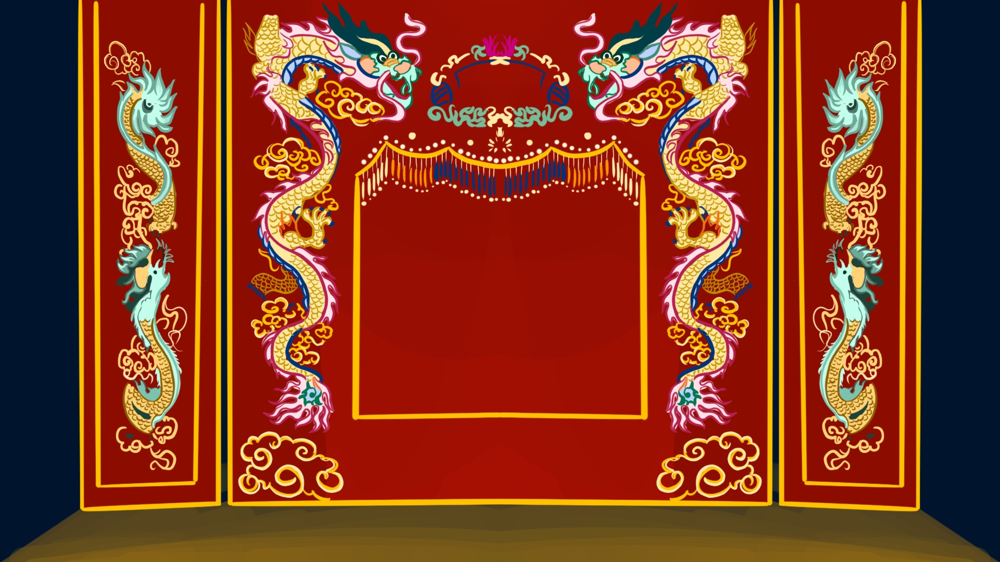
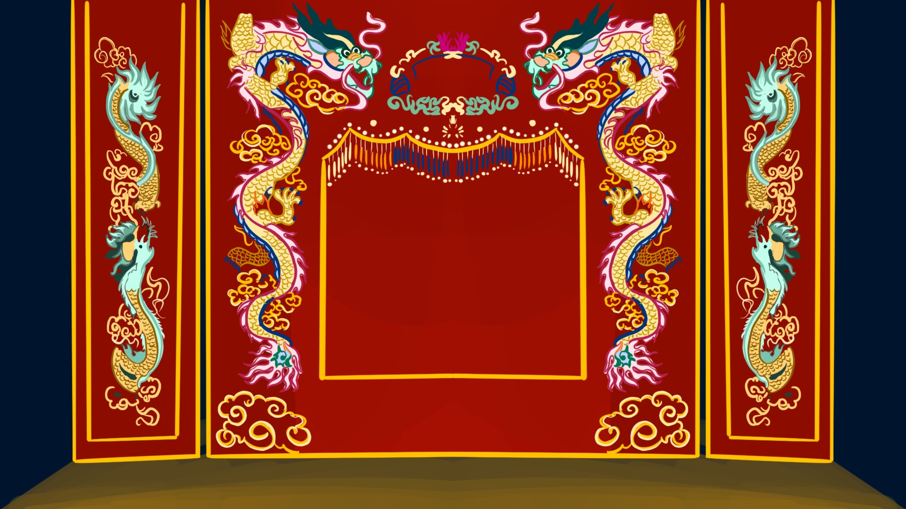

TCải lương (Vietnamese reformed theater) emerged in southern Vietnam in the late 19th century, blending traditional Vietnamese folk music with Western-style opera. It evolved from earlier forms of folk performance and became popular for its emotional storytelling, often focusing on themes of love, social justice, and historical events. The performances combine spoken dialogue with singing, accompanied by traditional instruments like the đàn tranh (zither) and đàn bầu (monochord). Cải lương became a central form of entertainment in Vietnam and remains a vital part of the country’s cultural heritage.
★★
Watching cải lương is an emotional and captivating journey. It’s like stepping into a melodramatic world where every word, note, and movement is packed with feeling. The performers’ voices are incredibly expressive, effortlessly blending speaking and singing into something that feels like a heartfelt conversation, all accompanied by the soulful sounds of instruments like the đàn tranh and đàn kìm.
What makes cải lương stand out is its storytelling—it’s modern yet deeply rooted in tradition. The themes often explore family, love, and societal struggles, making the stories feel relatable while still steeped in cultural identity. The costumes and set designs may not be overly elaborate, but they have a simplicity that lets the emotions and performances shine through.
 
